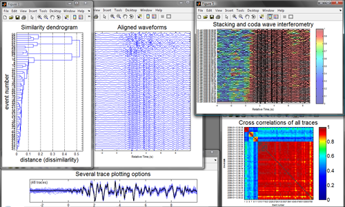

- What is GISMO?
- GISMO core
- waveform/SeismicTrace
- correlation
- Catalog
- Contributed code
What is GISMO?
GISMO is a MATLAB toolbox for seismic data analysis built on a common platform. In particular, GISMO provides a framework that speeds the development time for building research codes around seismic waveform/trace data, event catalog data and instrument responses. GISMO can import data from IRIS DMC, SAC & Seisan files, Antelope databases, and from ZMAP and CORAL format. With minimal coding, other formats can be imported.
Advantages:- makes playing with data easier by automating the tedious aspects of data manipulation
- makes programs more stable by ensuring proper data typing
- makes code more portable by reading multiple formats and functioning on multiple systems
- makes troubleshooting faster by providing more detailed messages and warnings
- provides a common framework that researchers can use to develop compatible codes
- GISMO core data types and toolkits
- an ever-evolving set of contributed codes developed from these core products
GISMO core
waveform (& SeismicTrace)
The waveform data type - and the SeismicTrace data type which will replace waveform - represents timeseries data, keeping it together with relevant metadata. Features include: 
- Load seismic waveform data from a variety of data sources (e.g. IRIS DMC, Earthworm/Winston waveservers, Antelope databases) and formats (e.g. Seisan, SAC, MiniSEED)
- Basic manipulations of waveform data, e.g. fill gaps, detrend, taper, filter, integrate, differentiate, stack, extract
- Plot seismograms, helicorders, spectrograms
- Various statistics, e.g. mean, rms, max, min
- Can handle thousands of traces at a time
- Forms the backbone of much of GISMO
View an old but still useful waveform tutorial and matlab object primer.
correlation
Allows a great variety of comparisons between seismic traces, such as:
{kind=link}
- max correlation and lag time determination for all event pairs
- Dendrogram-type hierarchical clustering of event families (multiplets)
- Basic manipulations e.g. filter, crop, subset, stack, normalize, automatic gain control
- Waveform interferometry
- Optimized differential arrival times
- Excellent tool for analysis of earthquake swarms
- Built on the waveform suite, but a few features (linkage, cluster and dendogram plotting) require the Statistics toolbox.
See correlation cookbook for demo of utilities.
Presentation "Tools and techniques in seismic waveform correlation", March 28, 2008 (5 Mb .pdf)
Catalog
Handles earthquake metadata such as origin times, lat/lon/depth coordinates, magnitudes, arrivals. Features include:
- Load event catalogs from IRIS DMC, USGS data feeds, Antelope databases, Seisan databases, ZMAP.
- Save event catalogs to Antelope databases.
- Plot hypocenters, magnitudes, event rates, energy release rates.
- Compute b-values, magnitude of completeness.
- Summary statistics
See Catalog cookbook for demo of utilities.
Contributed code
Users can (and have) contributed codes their own codes to GISMO. By the accretion of such codes, all built around core GISMO, we hope the GISMO Toolbox will become increasingly useful for seismology research.
Learn more about contributing to GISMO